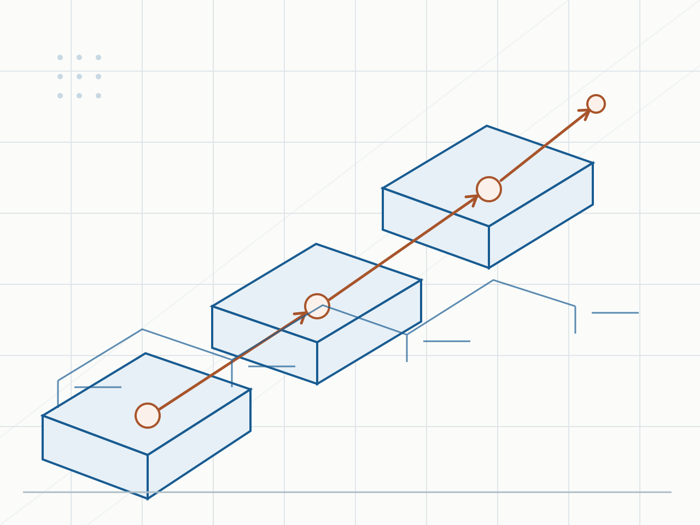

单用户
微型计算机上的数据库系统通常由一个用户使用

部署、通信、处理方式和服务方式共同决定体系结构
 VER. 2608.3
Built with impress.js
VER. 2608.3
Built with impress.js
数据库体系结构可以从部署位置、通信方式、任务处理、数据节点和服务交付等维度进行判断
三个章节都讨论“结构”，但它们关注的对象不同
| 章节 | 核心问题 | 关键对象 |
|---|---|---|
| 1.3 | 数据库内部怎样分层描述 | 外模式、模式、内模式和两级映像 |
| 1.4 | 系统靠什么运行、谁承担职责 | 数据、DBMS、应用、平台和人员 |
| 1.5 | 外部体系结构怎样部署、通信和协作 | 集中式、客户—服务器、并行、分布式和云 |
五类名称描述的维度不同，一个具体系统可以同时具有多种体系结构描述
先判断观察角度，再解释“结构”这个词
先找系统改变的维度，再判断哪种体系结构描述适用
| 判断轴 | 体系结构描述 |
|---|---|
| 组件位置与通信 | 集中式：主要组件同机；客户—服务器：客户端与服务器分置，可采用两层或三层 |
| 任务处理方式 | 并行：一个任务交给多个处理单元共同处理 |
| 数据位置与节点自治 | 分布式：数据跨多个网络节点，节点可以自治 |
| 能力交付方式 | 云数据库：数据库能力通过网络服务提供 |
这些判断轴可以叠加，不是五选一；比较体系结构时还要同时检查获得的能力与新增负担
应用、DBMS 和数据库集中在同一台计算机内，多个终端仍可以共享它
微型计算机上的数据库系统通常由一个用户使用
小型机或大型机上的数据库系统可以让多个终端共享同一个系统
有终端或网络不自动等于客户—服务器；关键看应用、DBMS 和数据库是否分置
集中式减少跨机器通信，但资源、扩展能力和故障影响也更集中
客户端应用通过网络向服务器上的 DBMS 请求数据，DBMS 再访问数据库
请求路径：客户端应用 → 服务器上的 DBMS → 服务器上的数据库
返回路径：数据库 → 服务器上的 DBMS → 网络 → 客户端应用
提供用户界面和部分业务数据处理流程，需要数据时发出请求；业务逻辑也可能由客户端与服务器共同承担
接收请求，处理数据库访问，把用户需要的数据返回给客户端
两层结构把应用使用和数据库管理分到客户端与服务器，也增加网络、认证和连接管理负担
浏览器—应用服务器—数据库服务器是客户—服务器结构的一种三层部署
提供统一的用户界面，发出业务请求
运行应用系统或应用模块，承接主要业务逻辑
运行 DBMS 和数据库，处理数据访问、事务和控制
三层部署结构和三级模式结构都包含三层，但回答的问题不同
两层直接连接数据库服务器，三层在中间增加应用服务器
| 结构 | 请求路径 | 返回路径 | 主要职责 |
|---|---|---|---|
| 两层 | 客户端 → 数据库服务器（DBMS + 数据库） | 数据库服务器 → 客户端 | 客户端直接请求数据服务 |
| 三层 | 浏览器 → 应用服务器 → 数据库服务器（DBMS + 数据库） | 数据库服务器 → 应用服务器 → 浏览器 | 应用服务器承接业务逻辑 |
两层和三层都属于客户—服务器结构；三层是在客户端与数据库服务之间增加应用层
先标出 DBMS 和数据库的位置，再沿请求与返回路径判断部署层次
一个查询可以拆给多个处理单元，再汇总结果；共享方式决定并行计算机的结构
| 结构 | 资源如何共享 |
|---|---|
| 共享内存型 | 多个处理器共享同一片内存 |
| 共享磁盘型 | 多个处理器共享磁盘，协同访问数据 |
| 非共享型 | 各处理单元拥有自己的处理器、内存和磁盘，通过系统协作 |
| 混合型 | 组合不同共享方式，按系统需要组织处理资源 |
并行关注一个任务怎样同时处理，不等于分布式的节点自治；它可以带来性能、可用性和扩展性，也需要协调成本
并行不保证每条查询都更快，是否受益取决于任务是否适合拆分
数据跨多个网络节点，用户仍可把它看作一个逻辑整体
| 观察点 | 具体含义 |
|---|---|
| 逻辑整体 | 多个节点上的数据在逻辑上仍作为一个数据库 |
| 场地自治 | 节点可以独立处理本地数据库 |
| 局部应用 | 独立访问和处理本地节点的数据 |
| 全局应用 | 通过网络访问和处理多个节点的数据 |
分布式的判据是数据物理跨网络节点并允许节点自治；它可提高就近处理、扩展性、可靠性和可用性，也会带来网络、故障和一致性问题
云数据库在云计算环境中部署或虚拟化，并通过网络按服务提供数据库能力
考试周选课高峰：调用云数据库服务 → 按需获得资源 → 返回结果
用户通过服务获得存储、更新、查询处理和事务管理，不必自己部署全部基础设施
云环境可以根据负载变化分配计算资源和存储资源
云服务分担部分基础设施运维，具体责任取决于服务边界；组织仍需管理数据、权限、安全与成本
云数据库描述数据库能力怎样提供，底层仍可以使用并行和分布式技术
先看系统改变了什么，再给它命名
| 体系结构 | 核心变化 | 获得的能力 | 新增问题 |
|---|---|---|---|
| 并行 | 一个任务使用多个处理单元 | 提高适合查询的处理速度 | 拆分、汇总和资源竞争 |
| 分布式 | 数据和处理跨多个网络节点，节点可以自治 | 就近处理、扩展性和可用性 | 网络故障、一致性和节点管理 |
| 云数据库 | 数据库能力按网络服务提供 | 按需资源和减少部分基础设施运维 | 服务依赖、隐私、成本和管理责任 |
这些描述可以叠加：一个云数据库可以同时采用并行和分布式技术
每个场景写出变化维度、可叠加的描述和新增负担；同一场景可对应多个描述
判断依据包括变化维度、可以叠加的体系结构描述和一个新增负担。有几台机器不能作为唯一判断依据
同一系统可同时具有多种体系结构描述，先找变化维度再命名
A、B、C 三个校区分别维护本地学生和成绩数据，教务处需要跨校区汇总；学生通过浏览器访问，考试周选课请求集中出现，学校正在比较自建服务器和云数据库服务
一个系统可以同时具有多种体系结构描述，选择时要说明业务范围、数据位置、负载变化、网络条件和管理能力
观察同一个系统时，先明确要回答的问题
| 章节 | 看什么 | 典型问题 | 相关但不同的内容 |
|---|---|---|---|
| 1.3 | 数据库内部抽象 | 哪一级模式发生变化 | 组件部署位置 |
| 1.4 | 系统运行整体 | 谁和什么共同支撑系统 | 网络节点协作方式 |
| 1.5 | 外部体系结构 | 应用、DBMS、数据库怎样部署 | 分布式实现算法、分片和具体云产品 |
1.5 的五类描述不是单一等级序列，具体系统可以同时使用多种技术
组件位置、请求路径和协作负担共同决定体系结构判断
集中式把主要组件放在一台计算机，客户—服务器把应用与数据库服务分开
并行把一个任务交给多个处理单元，分布式让多个节点处理本地或全局数据
云数据库以网络服务提供存储、查询和事务能力
云数据库仍需处理安全、隐私、成本和责任边界
先找组件位置、任务处理、数据节点和服务边界，再判断可以叠加哪些体系结构描述